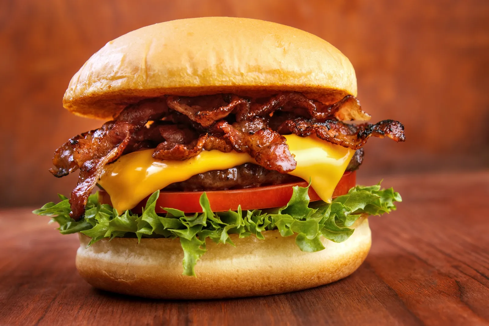

Hamburguesa

Descripción
Una hamburguesa es un popular plato de comida rápida y de la cocina estadounidense que consiste en un
filete de carne picada, generalmente de res, pollo, cerdo o incluso vegetales, cocinado a la
parrilla o a la plancha y servido en un panecillo o bollo, comúnmente llamado "pan de hamburguesa".
Ingredientes
- 250 gramos de carne picada
- 2 panes de hamburguesa
- Sal y pimienta al gusto
- Ingredientes para acompañar
- Cortes de lechuga
- Tomate
- Cebolla
- Queso
Pasos
- Divide la carne picada en dos partes iguales, aproximadamente 125 gramos cada una. Esto será suficiente para dos hamburguesas.
- Forma cada porción de carne en un disco plano y sazona ambos lados con sal y pimienta al gusto.
- Calienta una parrilla, sartén o plancha a fuego medio-alto y cocina las hamburguesas durante unos 3-4 minutos por cada lado
- Mientras se cocinan las hamburguesas, puedes tostar ligeramente los panes de hamburguesa en la misma parrilla o en una tostadora.
- Una vez que las hamburguesas estén cocidas a tu gusto y los panes estén tostados, ensambla las hamburguesas colocando las carnes en los panes y agregando tus ingredientes de acompañamiento favoritos, como lechuga, tomate, queso y condimentos